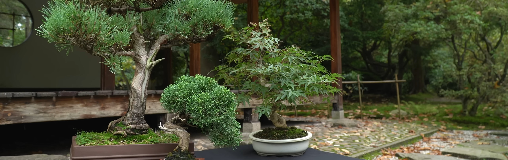
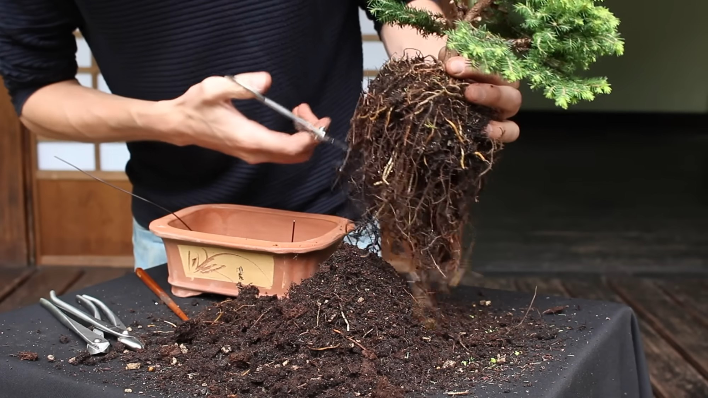
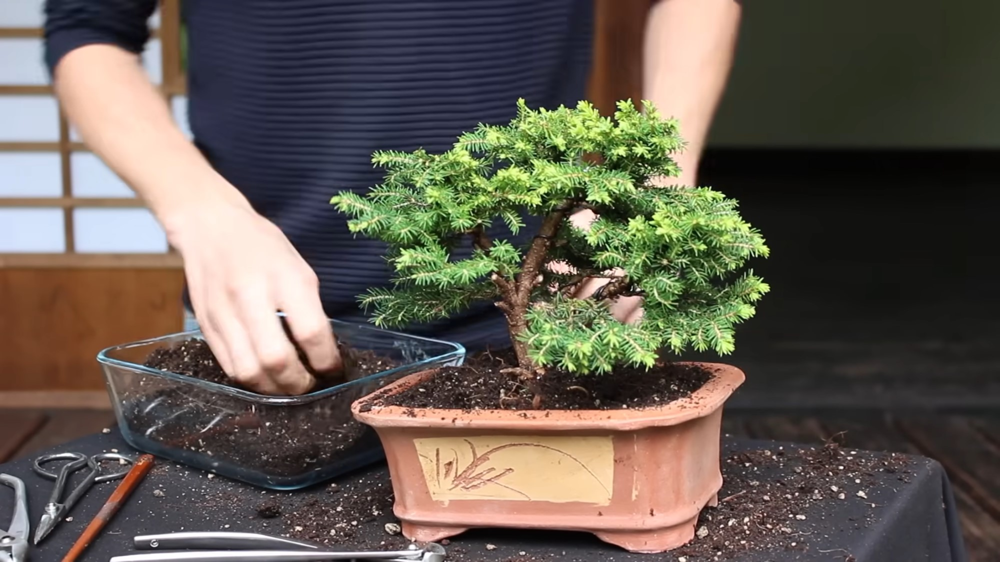

Pine, Juniper & Japanese Maple
Root pruning and repotting
Root pruning and potting on encourages the tree or shrub to produce fine roots, which take up water and nutrients more readily. It also allows the growing media to be replenished. These tasks should be carried out at two- or three-year intervals; with slow growing trees like pines needing root pruning every three-to-five years and rapid growing trees like birch requiring annual attention.
- Re-pot and root prune in spring, ideally before new growth resumes. However, autumn is suitable in mild and sheltered locations
- Remove the tree from its container. Be aware that the tree can be attached to the pot with wire for stability so this may need to be removed
- Loosen the compost and discard the spent compost. There are specialised small rakes that can be used for the task. Likewise, rinsing the soil off with a hose reveals the root-system for ease of pruning
- Untangle any long roots and then remove with sharp scissors
- You are looking to leave a neat and trimmed root-ball that is flat and circular
- Place back into its container and use a pencil or chopstick to gently work the compost in and around the roots
- Water well and keep in a shady, sheltered spot to reduce additional environmental stresses until it has firmly re-established


Composts
There are different, specialised compost mixes available for bonsai. However, you can make your own mix:
- Two parts (by volume) peat-substitute potting compost
- Two parts sharp sand or lime-free alpine grit
- One part John Innes No 3 (omit this for eriaceous as it contains lime and use one part more of potting compost instead)
- Mix well and, if desired, add a slow-release fertiliser such as Osmocote at the manufacturers recommended rate